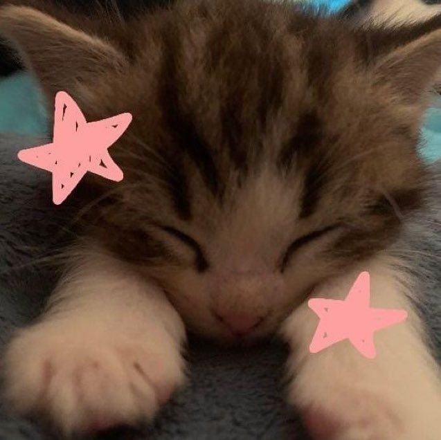

Por que você deveria ter um Gatinho?
Beneficios:
Porque tem todos os benificios possiveis kkk. Brincadeiras a parte, mas ter um
companheiro bixano faz muito bem apara nós, meros humanos, abixo estarei citando 5
motivos do porquê você deveria adotar um gatinho imediatamente

- Companhia e Redução da Solidão:
Os gatos são ótimos companheiros e podem ajudar a reduzir a sensação de solidão.
A presença de um gato pode proporcionar conforto e uma sensação de companhia constante.
- Redução do Estresse e Ansiedade:
Acariciar um gato pode liberar oxitocina, um hormônio que ajuda a reduzir o estresse
e a ansiedade. O ronronar dos gatos também tem um efeito calmante em muitas pessoas.
- Responsabilidade e Rotina:
Cuidar de um gato implica em responsabilidades como alimentá-lo, limpar sua caixa de
areia e levá-lo ao veterinário. Isso pode ajudar a desenvolver um senso de responsabilidade
e a estabelecer uma rotina diária.
- Benefícios Sociais:
Ter um gato pode ser um ótimo tópico de conversa e pode ajudar a conectar pessoas com
interesses semelhantes, promovendo interações sociais.
- Promoção do Bem-Estar Geral:
A presença de um gato pode aumentar o bem-estar geral, trazendo alegria e felicidade
para o lar.
rapaz